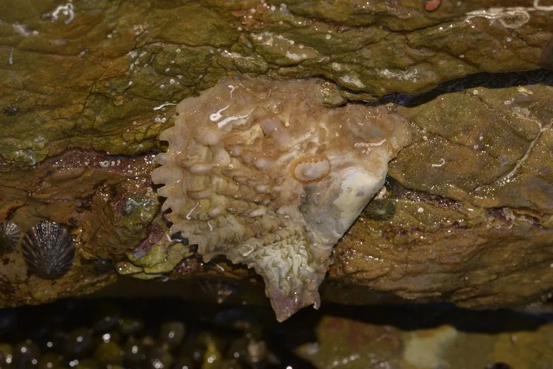

软体动物 · 动物界
合浦珠母贝 Pinctada fucata

中国南方培育海水珍珠的主要贝类，壳内面珍珠层光亮，广西合浦一带的“南珠”就产自这种贝，已有上千年养殖历史。
- 分类
- 门软体动物门纲双壳纲目珍珠贝目科珍珠贝科属珠母贝属
- 栖息环境
- 热带和亚热带浅海岩礁、珊瑚礁，水深 5–20 m，靠足丝附着
- 地理分布
- 印度洋—太平洋热带、亚热带海域，中国主要产区在广西合浦、广东和海南
- 保护级别
- 暂无评估；中国未列入国家重点保护野生动物名录（重要养殖贝类）
物种志
合浦珠母贝的贝壳呈斜方形或椭圆形，两壳不等，左壳稍凸、右壳较平。壳面灰褐或黑褐色，有鳞片状生长纹；壳内面珍珠层厚实，呈银白色或淡粉色，光泽柔和。壳长一般 6–10 cm。
合浦珠母贝分布于印度洋—太平洋的热带和亚热带浅海，包括中国南海、日本和澳大利亚等地，中国的主要产区在广西合浦、广东和海南。它栖息于水深 5–20 m 的岩礁和珊瑚礁，靠足丝附着在固体表面，以浮游生物和有机颗粒为食。合浦珠母贝的珍珠层可以分泌珍珠质：当沙粒或异物进入外套膜时，珍珠质会层层包裹异物，慢慢形成珍珠。中国利用这种贝养殖海水珍珠已有上千年历史，广西合浦一带出产的“南珠”久负盛名。它还有雄性先熟的性逆转现象，繁殖期在夏季。目前它没有IUCN 的正式评估，中国未将其列入国家重点保护野生动物名录。
形态与习性
- 食性滤食浮游生物和有机颗粒
- 壳长一般 6–10 cm
- 珍珠形成异物进入外套膜后，珍珠质层层包裹形成珍珠
- 养殖历史中国养殖海水珍珠已有上千年历史，“南珠”即产于此
- 栖息深度水深 5–20 m 的岩礁和珊瑚礁
- 繁殖有雄性先熟的性逆转现象，夏季繁殖
趣味知识
- 合浦珠母贝的壳内面有一层光亮的珍珠层，是培育海水珍珠的基础。
- 广西合浦一带出产的“南珠”就来自这种贝，养殖历史超过千年。
- 当异物进入外套膜，珠母贝会分泌珍珠质层层包裹，慢慢形成珍珠。